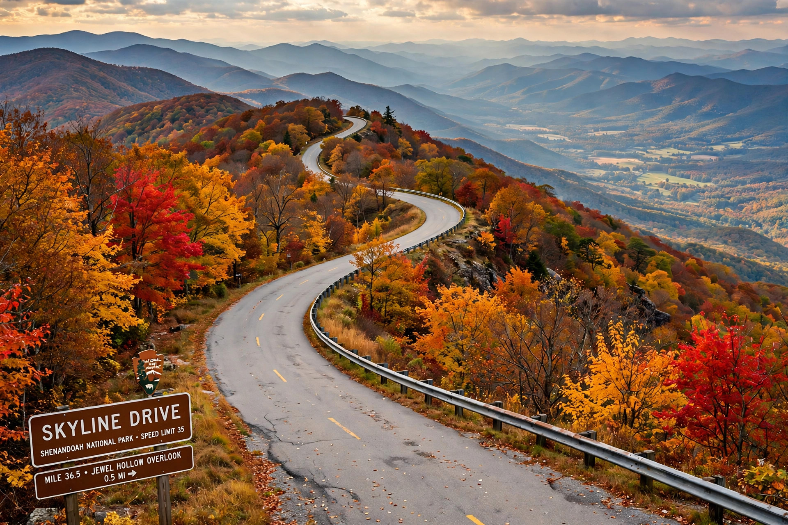

| Skyline Drive | |
|---|---|
| Length | 105 mi (169 km) |
| Location | Shenandoah National Park, Virginia |
| Speed limit | 35 mph |
| Historic designation | National Historic Landmark (1997) |
Skyline Drive is a 105-mile (169 km) scenic road running the length of Shenandoah National Park along the crest of the Blue Ridge Mountains in Virginia. Built during the Great Depression, it is the only public road through the park and offers 75 overlooks across the Shenandoah Valley and the Piedmont.

Construction began in 1931 as a relief project and continued through the 1930s, with crews of the Civilian Conservation Corps (CCC) building the road, stone walls, overlooks and visitor facilities in the park's rustic style. The drive was dedicated in stages and substantially complete by 1939; it was designated a National Historic Landmark in 1997.
The road runs from Front Royal in the north to Rockfish Gap in the south, where it continues as the Blue Ridge Parkway. The 35 mph speed limit encourages leisurely travel; overlooks and trailheads give access to hikes including Hawksbill Mountain, the park's highest point at 4,050 feet. Black bears, deer and the park's famous autumn foliage make it one of the most visited scenic drives in the National Park System.